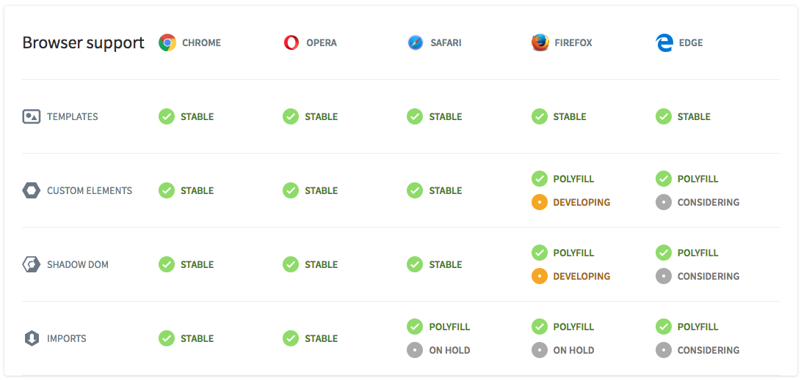
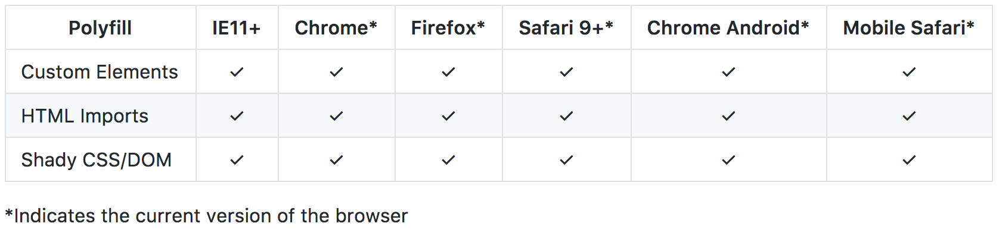

Patternfly Web Components
#PFCON2017
Patrick Riley, Red Hat UXD
Introduction
Topics Covered
- Web Component Basics & Web Component Standards
- Web Component Framework Interoperability & React / Angular2 Demos
- Advanced Framework Concepts & Javascript Patterns
- Closing notes and current discussion topics
"Powering great user experiences through open source design"


The future of the web...
"Custom Elements give us a built-in component model without requiring framework lock-in" - Rob Dodson, Google
- New browser standards aid in native component development
- Reusing components from different frameworks is overly challenging
- The jQuery plugin story is slowly ending
- Web components make excellent leaf nodes
Web components are...
- Composable: combine them together to create new experiences
- Encapsulated: isolate markup, styles, and behavior
- Reusable: easy to extend
- Simple!
Jquery Plugin becomes Web Component
Web Component specifications
Custom Elements
Browser APIs to define new HTML elements
HTML Templates
The <template> tag now allows documents to contain inert chunks of DOM
Shadow DOM
Encapsulated component DOM and styling
HTML Imports
Declarative methods of importing HTML documents into other documents
Custom Elements
Define new elements with the customElements global.
/* my-element.js */
class MyElement extends HTMLElement {
// This gets called when the HTML parser sees your tag
constructor() {
super(); // always call super() first in the ctor.
this.msg = 'Hello, World!';
}
// Called when your element is inserted in the DOM or
// immediately after the constructor if it’s already in the DOM
connectedCallback() {
this.innerHTML = `${this.msg}
`;
}
}
// This registers your new tag and associates it with your class
window.customElements.define('my-element', MyElement);
Custom Elements
v1 Lifecycle
| Callback | Called when |
|---|---|
| constructor | an instance of the element is created or upgraded. |
| connectedCallback | called every time the element is inserted into the DOM. |
| disconnectedCallback | called every time the element is removed from the DOM. |
| attributeChangedCallback(attrName, oldVal, newVal) | an attribute was added, removed, or updated. note: only attributes listed in the observedAttributes property will receive this callback. |
| adoptedCallback | the custom element has been moved into a new document (e.g. someone called document.adoptNode(el)). |
If using the latest v1 spec, you'll want to the load the v1 polyfill and auxiliary script native-shim.js for ES5 support.
<script src="//cdnjs.cloudflare.com/ajax/libs/webcomponentsjs/1.0.0/webcomponents-lite.js"></script>
<script src="//rawgit.com/webcomponents/custom-elements/master/src/native-shim.js"></script>
Custom Elements
You can also extend native HTML elements. The primary benefit is to gain all of their features (things like DOM properties, methods, and accessibility features).
class FancyButton extends HTMLButtonElement {
constructor() {
super();
this.addEventListener('click', e => this.drawRipple(e.offsetX, e.offsetY));
}
// Material design ripple animation.
drawRipple(x, y) {
let div = document.createElement('div');
div.classList.add('ripple');
this.appendChild(div);
div.style.top = `${y - div.clientHeight/2}px`;
div.style.left = `${x - div.clientWidth/2}px`;
div.style.backgroundColor = 'currentColor';
div.classList.add('run');
div.addEventListener('transitionend', e => div.remove());
}
}
customElements.define('fancy-button', FancyButton, {extends: 'button'});
Custom Elements
Consumers can utilize the element by declaring it in their HTML: jsfiddle
<button is="fancy-button">Fancy button!</button>
or by creating an instance in Javascript:
let button = document.createElement('button', {is: 'fancy-button'});
button.textContent = 'Fancy button!';
document.body.appendChild(button);
or using the new operator:
let button = new FancyButton();
button.textContent = 'Fancy button!';
document.body.appendChild(button);
HTML Templates
The <template> element allows you to declare fragments of DOM which are parsed, inert at page load, and can be activated later at runtime. jsfiddle
<template id="element-template">
<style>
p { color: orange; }
</style>
<p>I'm in Shadow DOM. My markup was stamped from a <template>.</p>
</template >
Shadow DOM
A new way to encapsulate styles, giving you functional boundaries between DOM subtrees. jsfiddle
(function(){
let elementTemplate = doc.querySelector('.element-template');
class MyElement extends HTMLElement {
attachedCallback() {
/* Create a new Shadow Root for your element */
this.createShadowRoot();
/* append your element's template */
this.shadowRoot.appendChild(document.importNode(elementTemplate.content, true));
}
}
})();
HTML Imports
Provide a new means to include HTML documents inside other documents. Now you can load your component's HTML, JS, and CSS in a single file. jsfiddle
Why do we need them?
- <iframe>s are difficult to style, frustrating to script with, and don't give us the same context.
- AJAX loading everything in large bundles & minified scripts just feels wrong. It doesn't give us composable pieces and overcomplicates dependency trees.
- Approaching HTTP/2 standards and server push are a perfect fit for HTML Imports.
<head>
<link rel="import" href="/path/to/imports/my-element.html">
</head>
Framework Interoperability
Web components will work with any framework. We've focused on two of the most popular JS frameworks today, Angular.js and React.js.
Framework Consumption
Web components can easily be consumed in your framework using an HTML import, script tag, or ES6 module import.
HTML Imports
<link rel="import" href="/path/to/imports/my-element.html">
Script Tags
<script src="/patternfly-webcomponents/dist/js/pf-alert.js"></script>
ES6 Modules
After NPM installing a framework shim, use an ES6 import:
import {Alert} from 'patternfly-react-shims'
Framework Communication
We communicate with the web component from the framework in three primary ways:
Events
this.modal.addEventListener('pf-modal.show', this.monitorModalEvents, false);
Attributes
<pf-tab title="Tab One" active="true"></pf-tab>
DOM
<pf-accordion-template id="collapseOne" aria-labelledby="headingOne">
<pf-accordion-body>
{{ message }}
</pf-accordion-body>
</pf-accordion-template>
Framework Component Demos
Some examples of common javascript components reimplemented as web components.
PF-Modal
Angular 1.6 plnkr Angular2: plnkr React: plnkr
PF-Accordion
Angular2: plnkr React: jsfiddle
PF-Tabs
Framework Extensions (shims)
Sometimes it is desirable to consume components via framework shims to customize these communications and ease consumption. jsfiddle
Shims can help with the following:
- Making the component feel like a framework component to the consumer
- Two way binding
- Dispatching custom events
- Handling framework mutations
- Imposing type restrictions
- Complex components
Getting ready for production...
Current Browser Support

Web Component Polyfill Browser Support

The Gold Standard
A good checklist to review before submitting your web component...
Ask yourself questions like...
- Are dependencies expressed (i.e. in Bower or NPM)?
- Is the DOM structure meaningful?
- Will the component respond to runtime changes in its content?
- Should the element support focus via Tab key or support other keyboard access?
- Is the styling presentable, extendable, responsive?
- Is the element API documented?
- Is the network and render performance efficient?
- Are strings, currencies, and dates localizable?
Patternfly Webcomponents Site & Demo Apps
Demo Apps
Framework Essentials
Frameworks often provide opinionated solutions for common problems.
Some Framework Commonalities
- Data binding
- Observing changes to data or state, typically via the Observer pattern
- Handling and firing events
- Url Routing
- Providing a common set of UI widgets and components
When should I use a Web Component?
Web components are amongst the most versatile components on the web today. Here's some areas we suggest considering them:
- Cross framework scenarios
"I'm developing a component that I'd like to share in another application using a different framework" - Complex Components
"I'm writing a complex graphical UI component that I'd like to expose in a more general way (ex: d3.js)." - Highly Specific Components
"I'm writing a zip code dropdown selector. I'd like to write this once and make it work everywhere." - Complex JS Animations
"I'm writing a complex animation using the JS Web Animation API. I'd like to share this in a general way.'" - General UI Components
I want to standardize a general UI component. This component meets my application needs and could meet someone else's.
Advanced Research Topics & Current Discussions
Some areas we are currently researching with web components:
- Data binding: property bindings, tagged template literals, and more...
- Shadow DOM: how to make it play nice with Bootstrap?
- PRPL Pattern: HTTP2 / Server push & PWAs
- Async rendering / rAF : Virtual DOM, Incremental DOM libraries
The Patternfly Community
We gladly welcome your UX, Design, and Dev ideas in our Patternfly community.
Thanks!
The Patternfly team would like to thank...
- @RedHatUXD, Red Hat
- @rob_dodson, Google
Questions?
Link to presentation: http://bit.do/pfcon2017
Come visit us!
- Website: http://www.patternfly.org
- Twitter: https://twitter.com/patternfly_des
- Slack channel: https://patternfly.slack.com/
- Patternfly Mailing List: https://www.redhat.com/mailman/listinfo/patternfly
- Contribution Guide: https://www.patternfly.org/get-started/contribute/#_
Further Resources
- WebComponents.org : an open community discussing web component best practices.